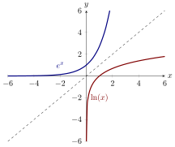

We derive the derivatives of inverse exponential functions using implicit
differentiation.
Geometrically, there is a close relationship between the plots of and , they are
reflections of each other over the line : 
One may suspect that we can use the fact that , to deduce the derivative of . We will
use implicit differentiation to exploit this relationship computationally.
The Derivative of the Natural Logrithm
From the derivative of the natural logarithm, we can deduce another fact:
The derivative of any logarithm Let be a positive real number.
Then
Here we need to remember that So we may write
We can also compute the derivative of an arbitrary exponential function.
The derivative of an exponential function Here we need to be slightly sneaky. Note
So we may write